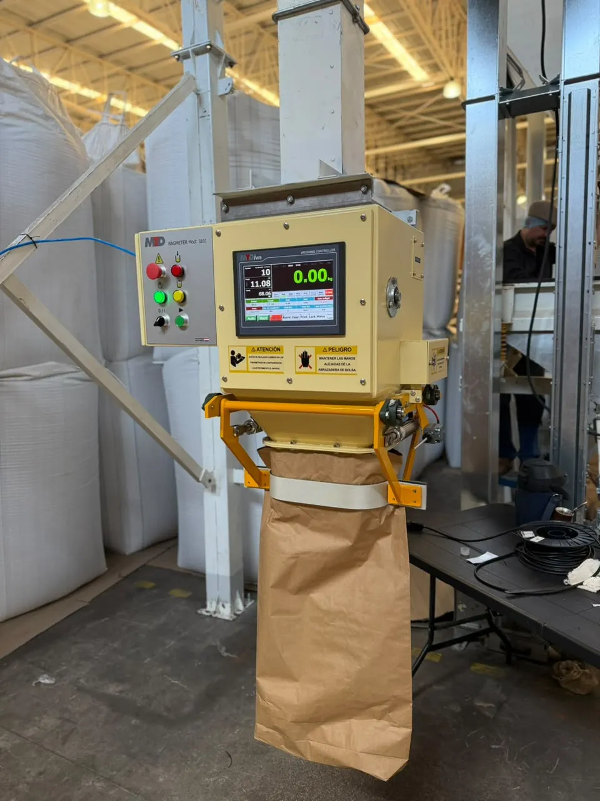

En Alimentos Mora Cue, Power Control Paraguay instaló y puso en marcha una embolsadora de peso bruto fabricada por MTD para bolsas de hasta 75 kg, orientada al embolsado de semillas de chía. El proyecto nació de una necesidad urgente: la embolsadora anterior quedó fuera de servicio tras dañarse durante una tormenta, y la planta necesitaba recuperar capacidad de envasado con un equipo confiable y más preciso.
El desafío: recuperar la línea sin repetir limitaciones del pasado
Además de reponer el equipo, el cliente planteó una mejora operativa clara respecto al sistema anterior. En la embolsadora previa, el operador debía descontar el peso de la bolsa y aplicar ajustes menores al valor objetivo para aproximarse al peso final deseado. Ese procedimiento aumentaba la dependencia del criterio manual y elevaba el riesgo de variaciones entre lotes.
El requerimiento fue directo: si la planta necesita embolsar 20 kg, el operador debe poder cargar ese setpoint y confiar en que la máquina tará automáticamente la bolsa y dosifique hasta el peso neto exacto, sin ajustes manuales intermedios.
Solución: fabricación MTD e integración en planta con PCP
La nueva embolsadora fue fabricada por MTD, especialista en soluciones de pesaje industrial. Power Control Paraguay actúa como uno de sus socios técnicos y comerciales: acompañamos al cliente desde el relevamiento hasta la puesta a punto e instalación en planta, dejando el equipo listo para el embolsado de semillas de chía.

Peso exacto: la mejora que cambia la operación diaria
En la embolsadora instalada, el operador configura el peso objetivo —por ejemplo 20 kg— y el sistema se encarga del resto: realiza la tara automática de la bolsa, carga el setpoint y dosifica hasta alcanzar el peso neto exacto. Ya no hace falta descontar a mano el peso del envase ni aplicar correcciones empíricas. El resultado es un proceso más preciso, simple y repetible, alineado con la calidad esperada en el envasado de producto alimentario.
- Capacidad de embolsado para bolsas de hasta 75 kg
- Tara automática de la bolsa y setpoint de peso neto exacto
- Aplicación específica para semillas de chía
- Equipo fabricado por MTD e integrado en planta por PCP
Resultado para la planta
Alimentos Mora Cue recuperó su capacidad de embolsado con un equipo nuevo de MTD, instalado y puesto en marcha por PCP, con una lógica de pesaje más clara para el operador. La combinación de respuesta ante la emergencia y mejora de precisión convierte este proyecto en un ejemplo típico de lo que PCP busca en planta: soluciones industriales prácticas, medibles y sostenibles en el tiempo.
¿Necesitás fabricar o reponer una embolsadora, o mejorar el control de peso en tu línea?
Ver automatización industrial